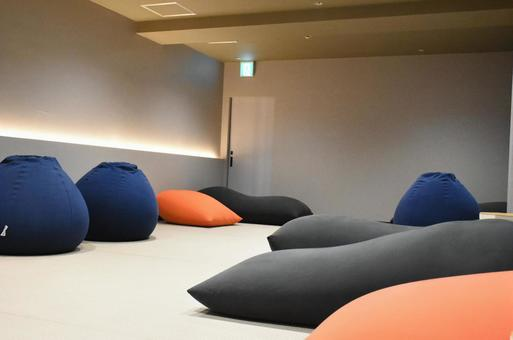

沈み込む静けさ。Yogiboで変わった作業と休憩の境界線
作業と休憩の境目が、ふわっと溶ける。
それがYogiboを迎えてからの、ぼくの部屋の変化だった。
Yogiboとの出会い
ずっと気になっていたけど、場所を取るし、値段もそれなり。
でも「静かな作業空間をつくりたい」と思ったとき、ふと浮かんだのがYogiboだった。
実際に使ってみた感想
最初に座ったときの感覚は、まさに“沈む”。でも不思議と、体が支えられている安心感がある。
背中も腰も、ふわっと包まれて、呼吸が深くなる。
作業中は、ノートPCを膝に置いて、ゆるくタイピング。
アイデア出しや文章を書くときは、この沈み込みがちょうどいい。
Yogiboの種類、どれを選ぶ？
- Mini：一人用。省スペースだけど、寝転ぶには小さい。
- Midi：中間サイズ。座る・もたれるにはちょうどいい。
- Max：全身を包む。作業・仮眠・読書、全部いける万能型。
Yogiboのある生活
読書、動画視聴、ストレッチ、仮眠、瞑想。
どれもYogiboの上だと、少しだけ深くなる気がする。
購入前に気になっていたこと
- 場所を取る？ → Maxは大きいけど、軽いから移動はラク。
- へたらない？ → 数ヶ月使ってるけど、今のところ問題なし。
- 洗える？ → カバーは外して洗濯OK。替えカバーも売ってる。
- 暑くない？ → 夏はちょっと蒸れる。冷感カバーがあると快適。
静けさとの相性
Yogiboは音を立てない。ギシギシもしないし、動いても静か。
静音マウスやキーボードと組み合わせると、部屋全体が“無音の作業空間”になる。
まとめ：沈むことで、整う
静けさって、音だけじゃない。
体がふっと力を抜ける場所も、静けさのひとつ。
Yogiboは、そんな“沈む静けさ”をくれた相棒だった。
[PR]
リンク